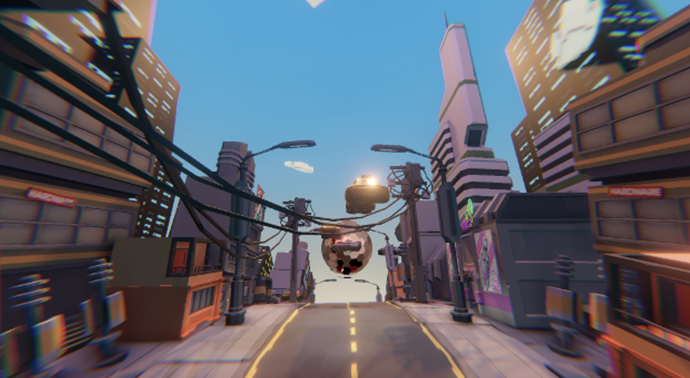

KuaFu
Abstract
Artwork Kuafu is mixed reality interactive media through leap motion.
Thematically, people in different times have different perceptions, but the same psychological archetypal meaning still exists behind them. Using the method of psychological analysis, we abstractly extract the archetypes from the Kuafu story and explore three sets of contradictions, including:
1. ideal desires and the constraints of reality: human beings have an endless desire to explore, but will be limited by limited resources;
2.time and space: time, life, and times are reincarnated, and space is constantly;
3. Success and disillusionment: the closer you are to success, the closer you are to disillusionment.
In terms of interaction, the audience controls the running speed of the virtual avatar through the wave speed of the hand recognized by leap motion.
Visually, there are four eras as the cycle: paleolithic, industrial, modern technological, and future civilization in decline, and the last scene of future civilization in decline is the end of the whole cycle and also the beginning of the first era. The audience will see different scene styles in different eras, including: Kuafu figure, sun figure, environment and resources that limit development.